Publications
Our Research
The Biological and Biomimetic Materials Laboratory (BBML) is guided by Prof. Ali Miserez. We study natural multifunctional materials that feature unique (or combination of) properties not achieved in man-made materials. Nature processes complex, tailored, structural materials, in an aqueous environment under ambient temperature and pressure (or less) using natural compounds. These naturally selected, time-tested biomaterials are recognized as powerful model systems, and their energy-efficient synthesis confers the motivation for our research. Understanding the underlying “green chemistry” can potentially offer sustainable alternatives to engineer existing as well as new materials. We endeavor to mimic these key structural, biochemical, and physicochemical principles that are discovered in the model systems and envision to overcome scientific challenges in diverse fields.
Research Approach
We discover and explore employing biomimetic-thinking methodologically using a multidisciplinary approach. Critical technological and scientific breakthroughs in the past allow us to brainstorm and study biological structures in a refined way. We identify and characterize proteins in the natural materials; recreate their synthetic analogs applying design strategies to emulate functional mimicries. For this, we accumulate creative ideas and techniques, adopted from:
Biochemistry: Protein identification, isolation, sequencing, recombinant protein expression.
Biophysics: Spectroscopy, X-ray diffraction, single-molecule force spectroscopy.
Material's characterization: Micro-nano structure, mechanical properties at various length scales, structure-process-property relationships.
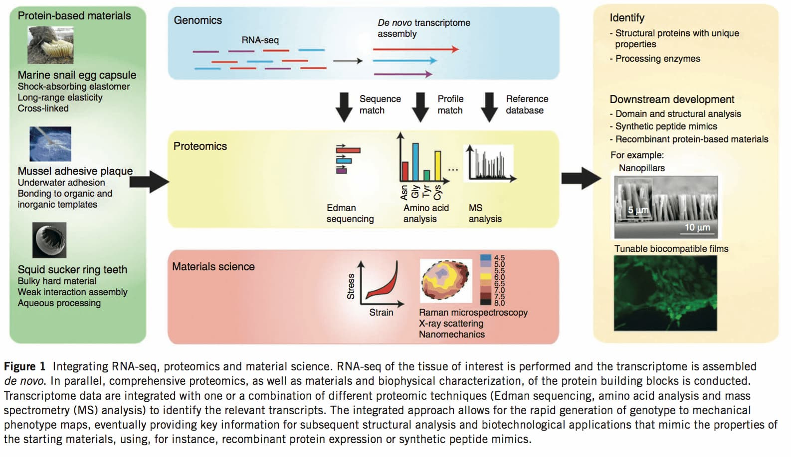
Accelerating the design of biomimetic materials by integrating RNA-seq with proteomics and materials science, Nature Biotechnology, 2013.
Focus Areas
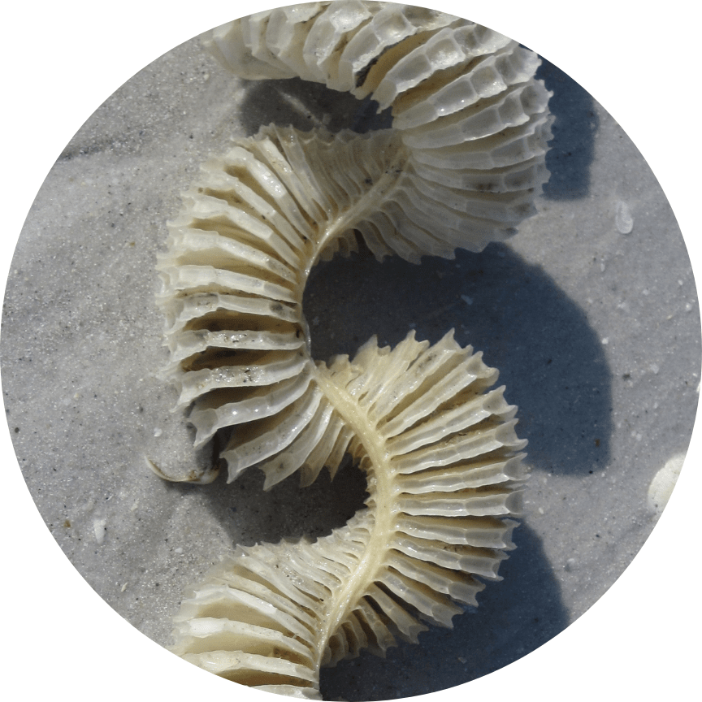
Bioelastomeric Membranes & Coiled-Coil Engineering
Bioelastomers in nature are fascinating materials because some of them own unique combinations of structural and physicochemical properties. In our lab, we explore the bioelastomers that derive their properties from coiled-coil proteins, such as the marine snail's egg capsules capable of effective dissipation of tidal energy.
Learn more.
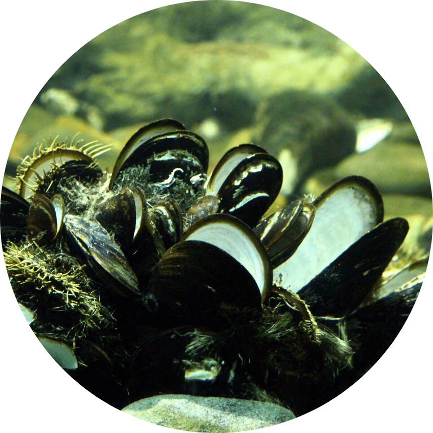
Mechanisms of Biofouling Adhesion & Anti-Adhesive Coating
The projects focus to counter marine biofouling problems, which causes a significant economic and environmental impact. We understudy the adhesive proteins of marine foulers that drive the robust underwater adhesion. Efforts are also directed towards the development of methods to assess fouling and anti-adhesive coatings.
Learn more.
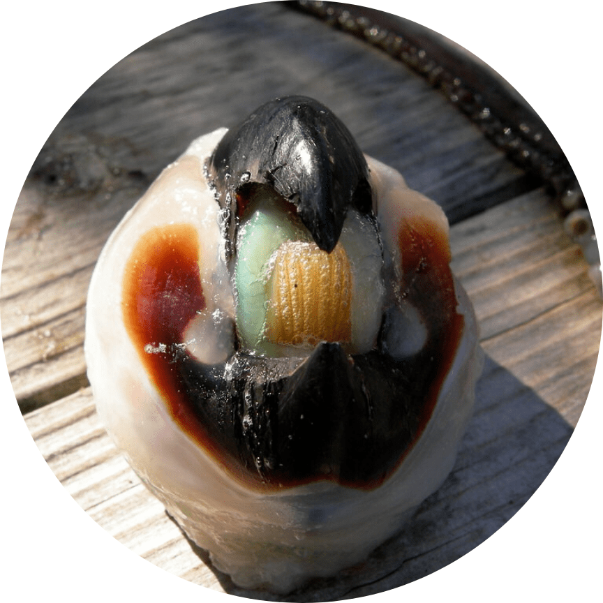
Molecular Biomimetics of Non-Mineralized Hard Tissues
Unlike hard tissues, nature also employs dense protein cross-linking, and/or formation of polysaccharide/protein complexes to impart strength and wear-resistance functionalities. Recognition of this novel paradigm offers for characterization, biomimetic synthesis of robust and biocompatible structural polymers with little or no mineral content.
Learn more.
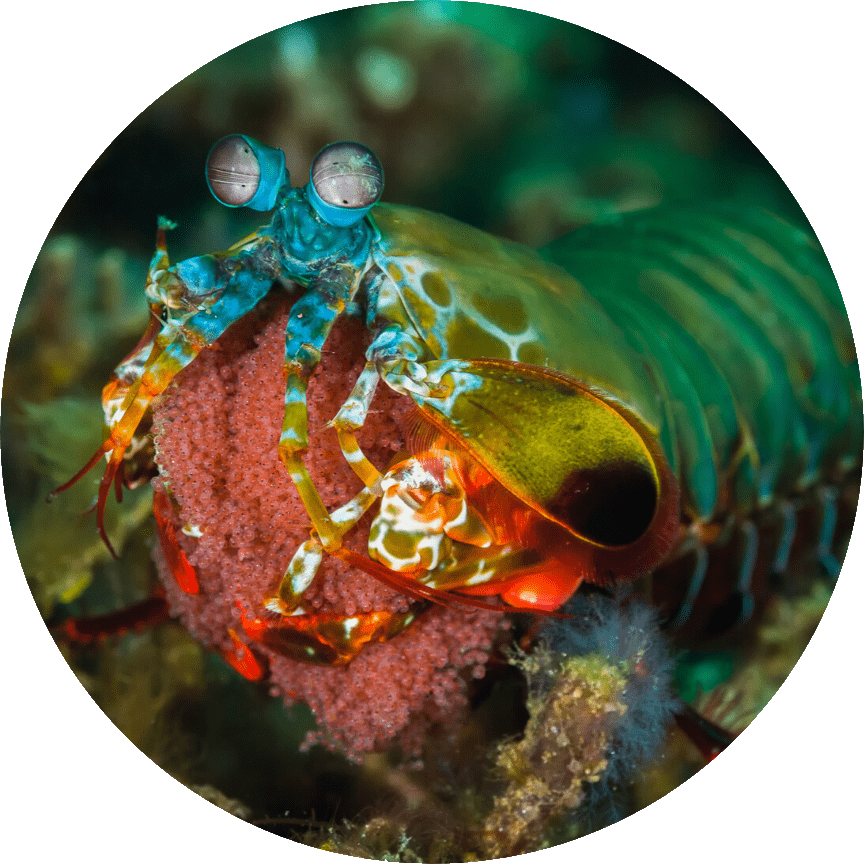
Biomineralized Structures with Graded/Modulated Properties
Projects explore biomineralized composites with unexpected inorganic materials that are assembled in a highly controlled manner exhibiting tailored functionalities. We also engage in developing in situ mechanical testing methods to reveal structure-properties relationships across multiple length scales.
Learn more.
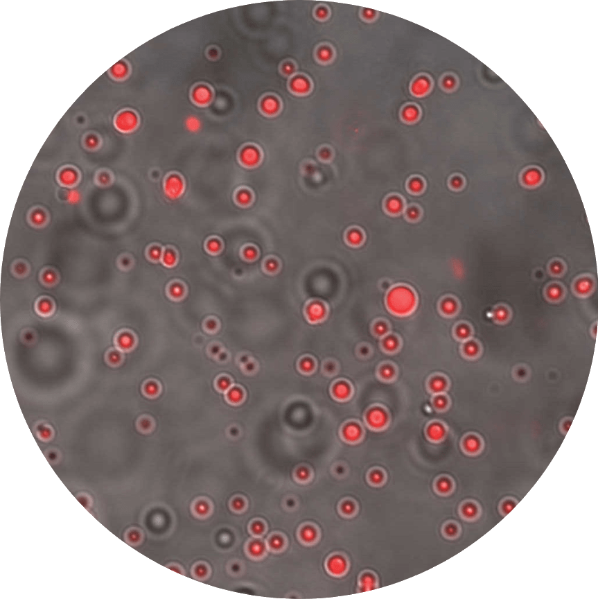
Liquid-Liquid Phase Separation
Liquid-liquid phase separation gives rise to fluidic droplets, which are found across multiple length scales of the biological media. By performing highly differentiated functions, these droplets act as dynamic “membraneless organelles” that allow the living system to rapidly assemble (and disassemble) molecular collectives and switch on –or turn off– new functionalities.
Learn more.Highlighted Papers

Disorder–Order Interplay of a Barnacle Cement Protein Triggered by Interactions with Calcium and Carbonate Ions: A Molecular Dynamics Study, Chemistry of Materials, 2020.
Magnetically responsive peptide coacervates for dual hyperthermia and chemotherapy treatments of liver cancer, Acta Biomaterialia, 2020.
Hydrogen bond guidance and aromatic stacking drive liquid-liquid phase separation of intrinsically disordered histidine-rich peptides, Nature Communications, 2019.
Glucose-Responsive Peptide Coacervates with High Encapsulation Efficiency for Controlled Release of Insulin, Bioconjugate Chemistry, 2018.
Preventing mussel adhesion using lubricant-infused materials, Science, 2017.
Squid suckerin microneedle arrays for tunable drug release, Journal of Materials Chemistry B, 2017.
Mussel adhesion is dictated by time-regulated secretion and molecular conformation of mussel adhesive proteins, Nature Communications, 2015.
The Mantis Shrimp Saddle: A Biological Spring Combining Stiffness and Flexibility, Advanced Functional Materials, 2015.
Multi-scale thermal stability of a hard thermoplastic protein-based material, Nature Communications, 2015.
The role of quasi-plasticity in the extreme contact damage tolerance of the stomatopod dactyl club, Nature Materials, 2015.
Infiltration of chitin by protein coacervates defines the squid beak mechanical gradient, Nature Chemical Biology, 2015.
From Soft Self-Healing Gels to Stiff Films in Suckerin-Based Materials Through Modulation of Crosslink Density and β-Sheet Content, Advanced Materials, 2015.
Biological materials and molecular biomimetics – filling up the empty soft materials space for tissue engineering applications, Journal of Materials Chemistry B, 2015.
Textured fluorapatite bonded to calcium sulphate strengthen stomatopod raptorial appendages, Nature Communications, 2014.
Accelerating the design of biomimetic materials by integrating RNA-seq with proteomics and materials science, Nature Biotechnology, 2013.
Phase Transition-Induced Elasticity of α-helical Bioelastomeric Fibres and Networks, Chemical Society Reviews, 2013.
Cross-linking Chemistry of Squid Beak, Journal of Biological Chemistry, 2010.
Microstructural and Biochemical Characterization of the Nanoporous Sucker Rings from Dosidicus gigas, Advanced Materials, 2009.
Non-entropic and reversible long-range deformation of an encapsulating bioelastomer, Nature Materials, 2009.
The Transition from Stiff to Compliant Materials in Squid Beaks, Science, 2008.
Effects of Laminate Architecture on Fracture Resistance of Sponge Biosilica: Lessons from Nature, Advanced Functional Materials, 2008
Team
With an interdisciplinary team and collaborations (local and international) we have access to comprehensive methods, specialized instruments, and skills for research advancement.
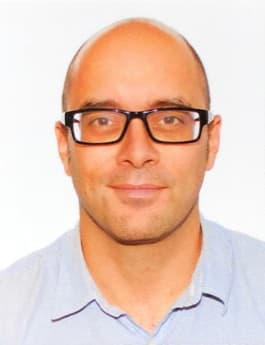
Prof. Ali Gilles Tchenguise Miserez
Principal InvestigatorDr. Eva Hiew Shu Hui
Senior Research Fellow & Safety Officer
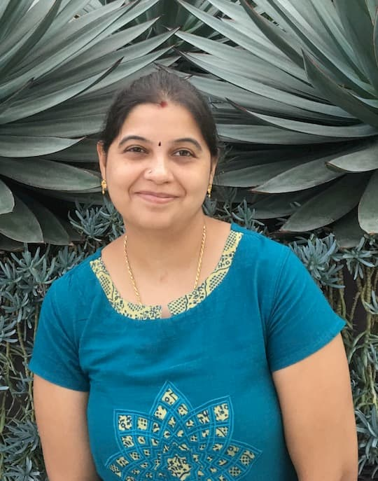
Dr. Harini Mohanram
Senior Research Fellow
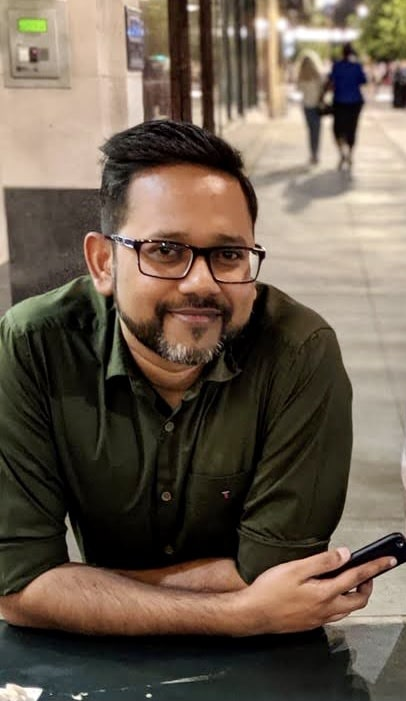
Dr. Sushanth
Senior Research Fellow
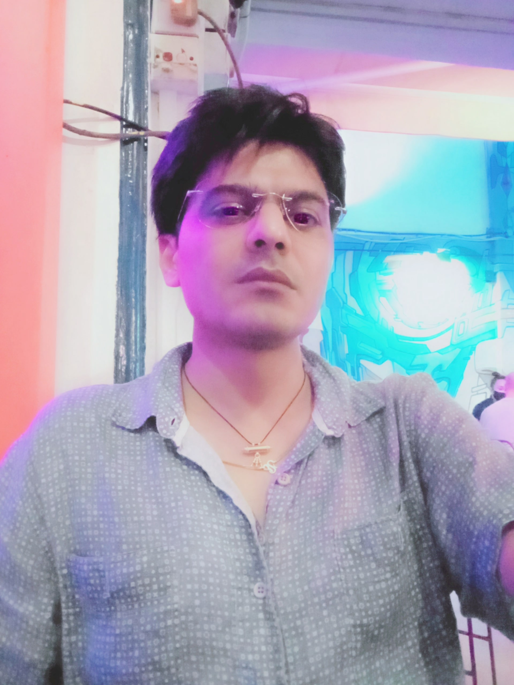
Dr. Rinku Saran
Senior Research FellowDr. Kanagavel Deepankumar
Research FellowDr. Bhargy Sharma
Research Fellow
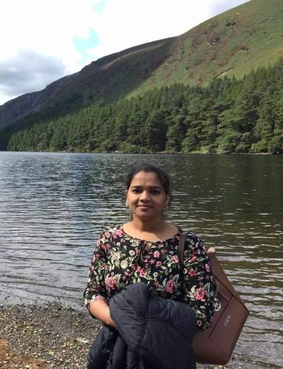
Dr. Bhuvaneswari Kannaian
Research Fellow
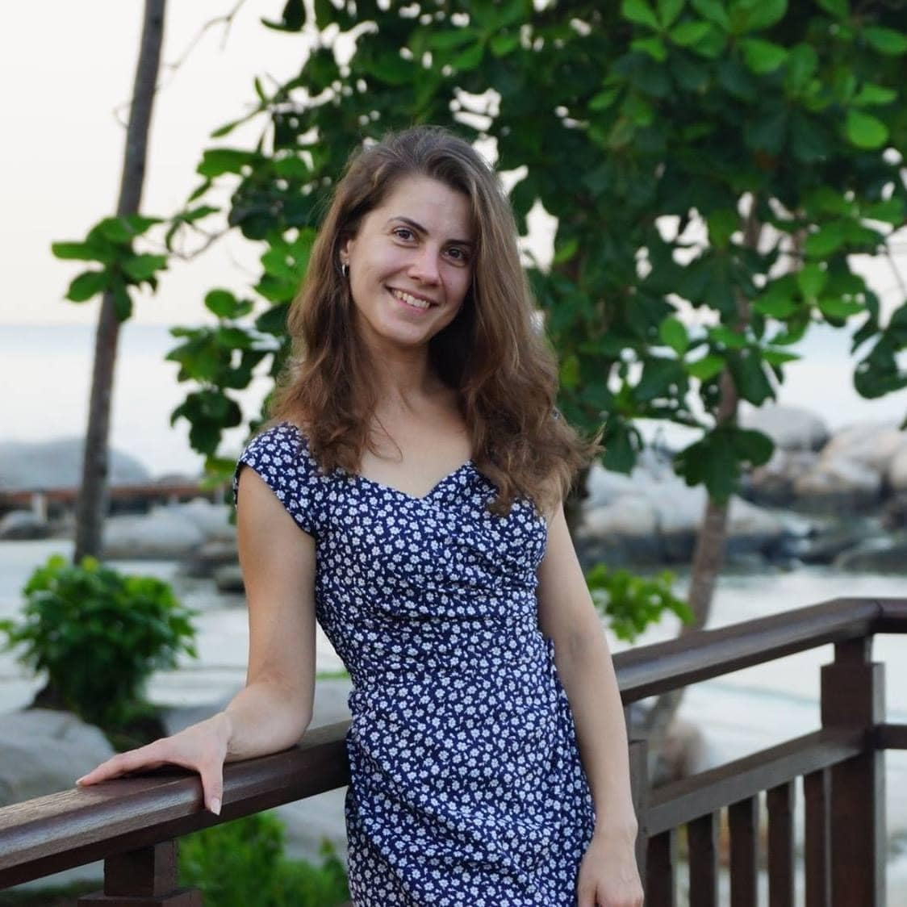
Dr. Anastasia Shebanova
Research FellowLoke Jun Jie
Research Assistant & Safety OfficerBui My Hanh
Research AssistantSunyoung Hur
Ph.D. Student
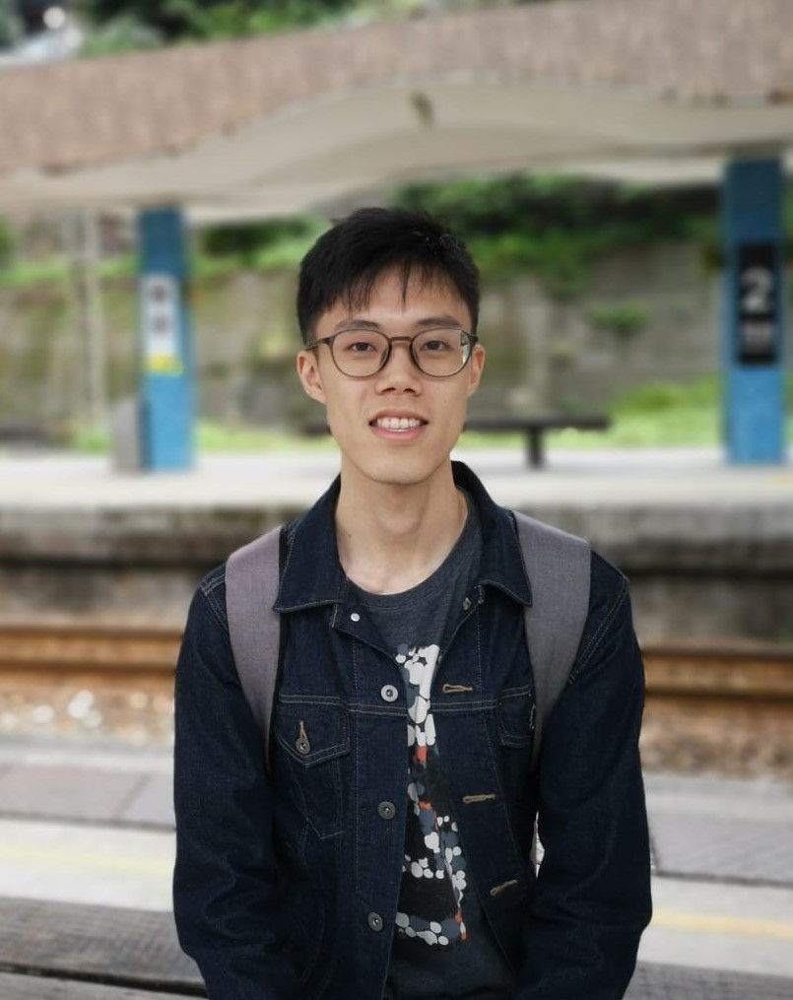
Kenrick Koh
Ph.D. StudentSun Yue
Ph.D. StudentSoon Wei Long
Ph.D. Student
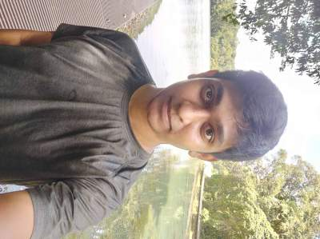
Jeffrey George
Ph.D. Student
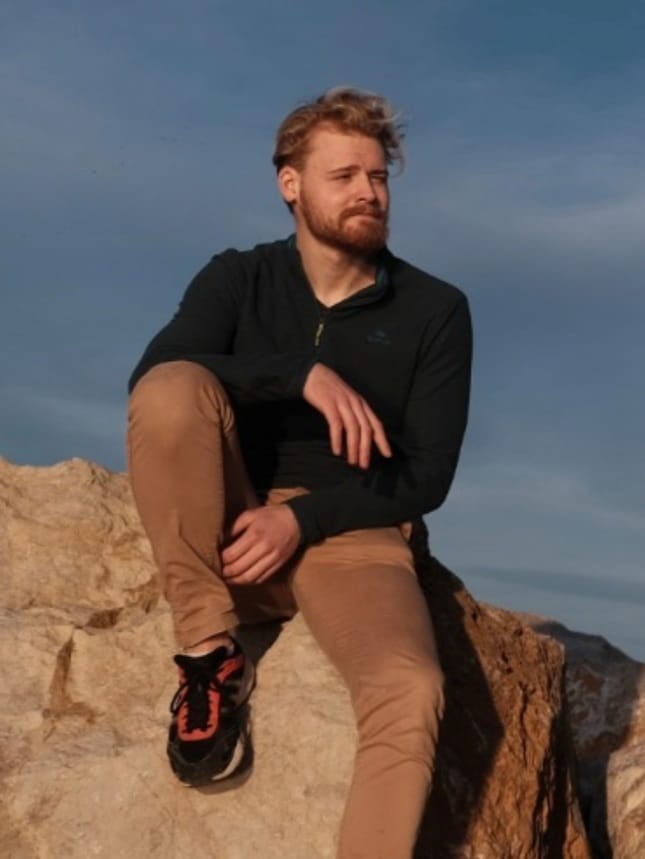
Quentin Moana Perrin
Ph.D. Student
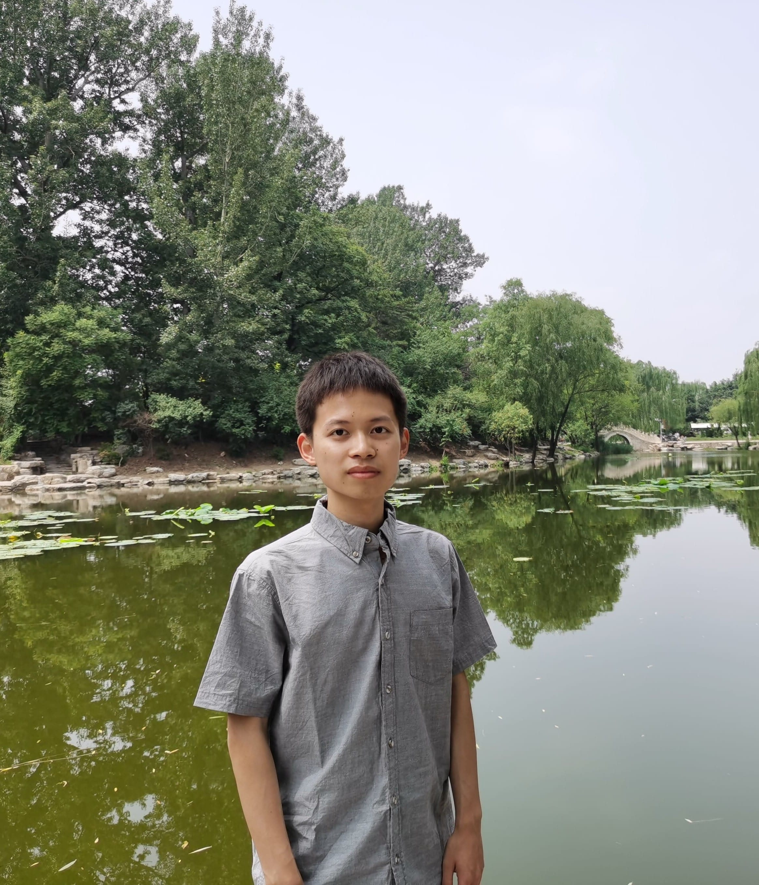
Congxi Huang
Ph.D. StudentNews
14
Dec 21
1
Dec 21
Publications
Bioinspired peptide hydrogel for drug delivery
Our article “Bioinspired short peptide hydrogel for versatile encapsulation and controlled release of growth factor therapeutics” is published in Acta Biomaterialia. In collaboration with Prof. Dalton Tay (MSE) and Prof. Andrew Tan (LKC and SBS), Senior Research Fellow Shu Hui Hiew has shown that the short GV8 peptide can be used as a simple hydrogel system for controlled release of growth factors and stem cell sectrome mixtures for wound healing applications.
Read more1
Sep 21

Publications
Composite made by cellulose crystals and proteins
The manuscript “Bioinspired Functionally Graded Composite Assembled Using Cellulose Nanocrystals and Genetically Engineered Proteins with Controlled Biomineralization” led by our collaborator Dr. Pezhman Mohammadi from VTT Research Center in Finland is published in “Advanced Materials”. Inspired by the stomatopod's dactyl club, Pezhman has synthesized a mineralized biocomposite exhibiting high strength, stiffness, and fracture toughness.
Read moreCareers
We are always looking for outstanding researchers. Please contact Prof. Ali Miserez (ALI.MISEREZ@ntu.edu.sg), attach your CV and state your reason for applying. You may also apply via the links indicated
We are currently looking for research fellows/senior research fellows to work on an exciting interdisciplinary project in the area of protein-based biopolymers, with an overarching goal to produce eco-friendly and biodegradable biopolymers. See the links below for more details on the job scope and requirements.
Contact
+6563168979
Centre for Biomimetic Sensor Science (CBSS), 50 Nanyang Drive, Research Techno Plaza (RTP), Level 6, X-Frontier Block, Nanyang Technological University (NTU), Singapore 637553.